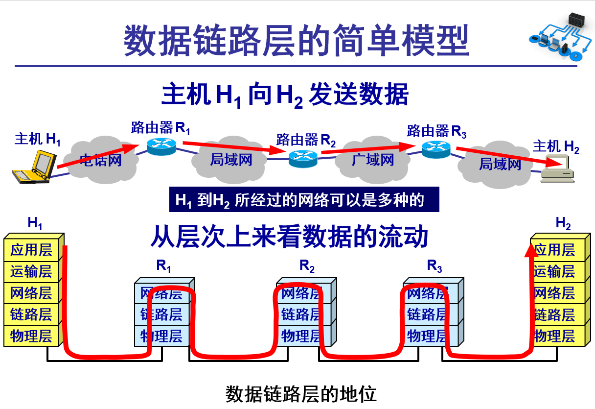
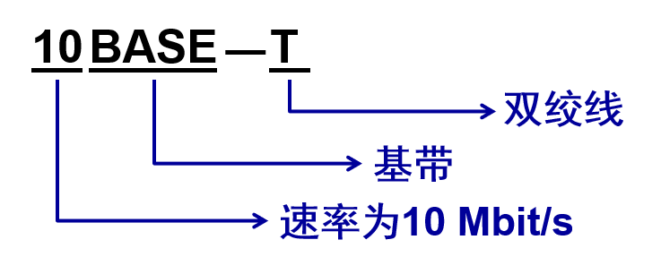

第三章、数据链路层
1、数据链路层使用的信道
数据链路层使用的信道主要有以下两种类型：
- 点对点信道。这种信道使用一对一的点对点通信方式。
- 广播信道。这种信道使用一对多的广播通信方式，因此过程比较复杂。广播信道上连接的主机很多，因此必须使用专用的共享信道协议来协调这些主机的数据发送。
2、数据链路层的简单模型

3.1 使用点对点信道的数据链路层
3.1.1 数据链路和帧 3.1.2 三个基本问题
3.1.1 数据链路和帧
- 链路 (link) 是一条无源的点到点的物理线路段，中间没有任何其他的交换结点。
- 一条链路只是一条通路的一个组成部分。
- 数据链路 (data link) 除了物理线路外，还必须有通信协议来控制这些数据的传输。若把实现这些协议的硬件和软件加到链路上，就构成了数据链路。
- 现在最常用的方法是使用适配器（即网卡）来实现这些协议的硬件和软件。一般的适配器都包括了数据链路层和物理层这两层的功能。
也有人采用另外的术语。这就是把链路分为物理链路和逻辑链路。
物理链路就是上面所说的链路。
逻辑链路就是上面的数据链路，是物理链路加上必要的通信协议。
早期的数据通信协议曾叫做通信规程 (procedure)。因此在数据链路层，规程和协议是同义语。

数据链路层像个数字管道
常常在两个对等的数据链路层之间画出一个数字管道，而在这条数字管道上传输的数据单位是帧。

数据链路层不必考虑物理层如何实现比特传输的细节。甚至还可以更简单地设想好像是沿着两个数据链路层之间的水平方向把帧直接发送到对方。
3.1.2 三个基本问题
数据链路层协议有许多种，但有三个基本问题则是共同的。这三个基本问题是：
- 封装成帧
- 透明传输
- 差错控制
1、封装成帧
封装成帧 (framing) 就是在一段数据的前后分别添加首部和尾部，然后就构成了一个帧。确定帧的界限。 首部和尾部的一个重要作用就是进行帧定界。

用控制字符进行帧定界的方法举例
当数据是由可打印的 ASCII 码组成的文本文件时，帧定界可以使用特殊的帧定界符。
控制字符 SOH (Start Of Header) 放在一帧的最前面，表示帧的首部开始。另一个控制字符 EOT (End Of Transmission) 表示帧的结束。

2、透明传输
如果数据中的某个字节的二进制代码恰好和 SOH 或 EOT 一样，数据链路层就会错误地“找到帧的边界”。

数据部分恰好出现与 EOT 一样的代码
解决透明传输问题
解决方法：字节填充 (byte stuffing) 或字符填充 (character stuffing)。
发送端的数据链路层在数据中出现控制字符“SOH”或“EOT”的前面插入一个转义字符“ESC” (其十六进制编码是 1B)。
接收端的数据链路层在将数据送往网络层之前删除插入的转义字符。
如果转义字符也出现在数据当中，那么应在转义字符前面插入一个转义字符 ESC。当接收端收到连续的两个转义字符时，就删除其中前面的一个。
用字节填充法解决透明传输的问题

3、差错检测
- 在传输过程中可能会产生比特差错：1 可能会变成 0 而 0 也可能变成 1。
- 在一段时间内，传输错误的比特占所传输比特总数的比率称为误码率 BER (Bit Error Rate)。
- 误码率与信噪比有很大的关系。
- 为了保证数据传输的可靠性，在计算机网络传输数据时，必须采用各种差错检测措施。
循环冗余检验的原理
- 在数据链路层传送的帧中，广泛使用了循环冗余检验 CRC 的检错技术。
- 在发送端，先把数据划分为组。假定每组 k 个比特。
- 假设待传送的一组数据 M = 101001（现在 k = 6）。我们在 M 的后面再添加供差错检测用的 n 位冗余码一起发送。
冗余码的计算
- 用二进制的模 2 运算进行 2n 乘 M 的运算，这相当于在 M 后面添加 n 个 0。
- 得到的 (k + n) 位的数除以事先选定好的长度为 (n + 1) 位的除数 P，得出商是 Q 而余数是 R，余数 R 比除数 P 少 1 位，即 R 是 n 位。
- 将余数 R 作为冗余码拼接在数据 M 后面发送出去。
冗余码的计算举例


帧检验序列 FCS
- 在数据后面添加上的冗余码称为帧检验序列 FCS (Frame Check Sequence)。
- 循环冗余检验 CRC 和帧检验序列 FCS 并不等同。
- CRC 是一种常用的检错方法，而 FCS 是添加在数据后面的冗余码。
- FCS 可以用 CRC 这种方法得出，但 CRC 并非用来获得 FCS 的唯一方法。
接收端对收到的每一帧进行 CRC 检验
(1) 若得出的余数 R = 0，则判定这个帧没有差错，就接受 (accept)。
(2) 若余数 R 0，则判定这个帧有差错，就丢弃。
但这种检测方法并不能确定究竟是哪一个或哪几个比特出现了差错。
只要经过严格的挑选，并使用位数足够多的除数 P，那么出现检测不到的差错的概率就很小很小。
应当注意
- 仅用循环冗余检验 CRC 差错检测技术只能做到无差错接受 (accept)。
- “无差错接受”是指：“凡是接受的帧（即不包括丢弃的帧），我们都能以非常接近于 1 的概率认为这些帧在传输过程中没有产生差错”。
- 也就是说：“凡是接收端数据链路层接受的帧都没有传输差错”（有差错的帧就丢弃而不接受）。
- 要做到“可靠传输”（即发送什么就收到什么）就必须再加上确认和重传机制。
- 应当明确，“无比特差错”与“无传输差错”是不同的概念。
- 在数据链路层使用 CRC 检验，能够实现无比特差错的传输，但这还不是可靠传输。
- 本章介绍的数据链路层协议都不是可靠传输的协议。
3.2 点对点协议 PPP
3.2.1 PPP 协议的特点
- 对于点对点的链路，目前使用得最广泛的数据链路层协议是点对点协议 PPP (Point-to-Point Protocol)。
- 用户使用拨号电话线接入互联网时， 用户计算机和 ISP 进行通信时所使用的数据链路层协议就是 PPP 协议。
- PPP 协议在1994年就已成为互联网的正式标准。
用户到 ISP 的链路使用 PPP 协议

1、PPP 协议应满足的需求
- 简单 —— 这是首要的要求。
- 封装成帧 —— 必须规定特殊的字符作为帧定界符。
- 透明性 —— 必须保证数据传输的透明性。
- 多种网络层协议 —— 能够在同一条物理链路上同时支持多种网络层协议。
- 多种类型链路 —— 能够在多种类型的链路上运行。
- 差错检测 —— 能够对接收端收到的帧进行检测，并立即丢弃有差错的帧。
- 检测连接状态 —— 能够及时自动检测出链路是否处于正常工作状态。
- 最大传送单元 —— 必须对每一种类型的点对点链路设置最大传送单元 MTU 的标准默认值，促进各种实现之间的互操作性。
- 网络层地址协商 —— 必须提供一种机制使通信的两个网络层实体能够通过协商知道或能够配置彼此的网络层地址。
- 数据压缩协商 —— 必须提供一种方法来协商使用数据压缩算法。
2、PPP 协议不需要的功能
- 纠错
- 流量控制
- 序号
- 多点线路
- 半双工或单工链路
3、PPP 协议的组成
PPP 协议有三个组成部分：
(1) 一个将 IP 数据报封装到串行链路的方法。
(2) 链路控制协议 LCP (Link Control Protocol)。
(3) 网络控制协议 NCP (Network Control Protocol)。
3.2.2 PPP 协议的帧格式
- PPP 帧的首部和尾部分别为 4 个字段和 2 个字段。
- 标志字段 F = 0x7E （符号“0x”表示后面的字符是用十六进制表示。十六进制的 7E 的二进制表示是 01111110）。
- 地址字段 A 只置为 0xFF。地址字段实际上并不起作用。
- 控制字段 C 通常置为 0x03。
- PPP 是面向字节的，所有的 PPP 帧的长度都是整数字节。
PPP 协议的帧格式

透明传输问题
- 当 PPP 用在同步传输链路时，协议规定采用硬件来完成比特填充（和 HDLC 的做法一样）。
- 当 PPP 用在异步传输时，就使用一种特殊的字符填充法。
字符填充
- 将信息字段中出现的每一个 0x7E 字节转变成为 2 字节序列 (0x7D, 0x5E)。
- 若信息字段中出现一个 0x7D 的字节, 则将其转变成为 2 字节序列 (0x7D, 0x5D)。
- 若信息字段中出现 ASCII 码的控制字符（即数值小于 0x20 的字符），则在该字符前面要加入一个 0x7D 字节，同时将该字符的编码加以改变。
零比特填充
- PPP 协议用在 SONET/SDH 链路时，使用同步传输（一连串的比特连续传送）。这时 PPP 协议采用零比特填充方法来实现透明传输。
- 在发送端，只要发现有 5 个连续 1，则立即填入一个 0。
- 接收端对帧中的比特流进行扫描。每当发现 5 个连续1时，就把这 5 个连续 1 后的一个 0 删除。

不提供使用序号和确认的可靠传输
PPP 协议之所以不使用序号和确认机制是出于以下的考虑：
- 在数据链路层出现差错的概率不大时，使用比较简单的 PPP 协议较为合理。
- 在因特网环境下，PPP 的信息字段放入的数据是 IP 数据报。数据链路层的可靠传输并不能够保证网络层的传输也是可靠的。
- 帧检验序列 FCS 字段可保证无差错接受。
3.2.3 PPP 协议的工作状态
- 当用户拨号接入 ISP 时，路由器的调制解调器对拨号做出确认，并建立一条物理连接。
- PC 机向路由器发送一系列的 LCP 分组（封装成多个 PPP 帧）。
- 这些分组及其响应选择一些 PPP 参数，并进行网络层配置，NCP 给新接入的 PC 机分配一个临时的 IP 地址，使 PC 机成为因特网上的一个主机。
- 通信完毕时，NCP 释放网络层连接，收回原来分配出去的 IP 地址。接着，LCP 释放数据链路层连接。最后释放的是物理层的连接。
- 可见，PPP 协议已不是纯粹的数据链路层的协议，它还包含了物理层和网络层的内容。

3.3 使用广播信道的数据链路层
3.3.1 局域网的数据链路层
-
局域网最主要的特点是：
- 网络为一个单位所拥有；
- 地理范围和站点数目均有限。
-
局域网具有如下主要优点：
- 具有广播功能，从一个站点可很方便地访问全网。局域网上的主机可共享连接在局域网上的各种硬件和软件资源。
- 便于系统的扩展和逐渐地演变，各设备的位置可灵活调整和改变。
- 提高了系统的可靠性、可用性和残存性。
局域网拓扑结构

媒体共享技术
静态划分信道:
- 频分复用
- 时分复用
- 波分复用
- 码分复用
动态媒体接入控制（多点接入）:
- 随机接入
- 受控接入 ，如多点线路探询 (polling)，或轮询。
1 以太网的两个标准
- DIX Ethernet V2 是世界上第一个局域网产品（以太网）的规约。
- IEEE 802.3 是第一个 IEEE 的以太网标准。
- DIX Ethernet V2 标准与 IEEE 的 802.3 标准只有很小的差别，因此可以将 802.3 局域网简称为“以太网”。
- 严格说来，“以太网”应当是指符合 DIX Ethernet V2 标准的局域网 。
数据链路层的两个子层
-
为了使数据链路层能更好地适应多种局域网标准，IEEE 802 委员会就将局域网的数据链路层拆成两个子层：
- 逻辑链路控制 LLC (Logical Link Control)子层；
- 媒体接入控制 MAC (Medium Access Control)子层。
-
与接入到传输媒体有关的内容都放在 MAC子层，而 LLC 子层则与传输媒体无关。
-
不管采用何种协议的局域网，对 LLC 子层来说都是透明的。
局域网对LLC子层是透明的

一般不考虑 LLC 子层
由于 TCP/IP 体系经常使用的局域网是 DIX Ethernet V2 而不是 802.3 标准中的几种局域网，因此现在 802 委员会制定的逻辑链路控制子层 LLC（即 802.2 标准）的作用已经不大了。
很多厂商生产的适配器上就仅装有 MAC 协议而没有 LLC 协议。
2. 适配器的作用
- 网络接口板又称为通信适配器 (adapter) 或网络接口卡 NIC (Network Interface Card)，或“网卡”。
- 适配器的重要功能：
- 进行串行/并行转换。
- 对数据进行缓存。
- 在计算机的操作系统安装设备驱动程序。
- 实现以太网协议。
计算机通过适配器和局域网进行通信

3.3.2 CSMA/CD 协议
最初的以太网是将许多计算机都连接到一根总线上。当初认为这样的连接方法既简单又可靠，因为总线上没有有源器件。

以太网采用广播方式发送
- 总线上的每一个工作的计算机都能检测到 B 发送的数据信号。
- 由于只有计算机 D 的地址与数据帧首部写入的地址一致，因此只有 D 才接收这个数据帧。
- 其他所有的计算机（A, C 和 E）都检测到不是发送给它们的数据帧，因此就丢弃这个数据帧而不能够收下来。
- 在具有广播特性的总线上实现了一对一的通信。
以太网采取了两种重要的措施
为了通信的简便，以太网采取了两种重要的措施：
(1) 采用较为灵活的无连接的工作方式
- 不必先建立连接就可以直接发送数据。
- 对发送的数据帧不进行编号，也不要求对方发回确认。
- 这样做的理由是局域网信道的质量很好，因信道质量产生差错的概率是很小的。
以太网提供的服务
- 以太网提供的服务是不可靠的交付，即尽最大努力的交付。
- 当目的站收到有差错的数据帧时就丢弃此帧，其他什么也不做。差错的纠正由高层来决定。
- 如果高层发现丢失了一些数据而进行重传，但以太网并不知道这是一个重传的帧，而是当作一个新的数据帧来发送。
(2) 以太网发送的数据都使用曼彻斯特 (Manchester) 编码

CSMA/CD协议
- CSMA/CD 含义：载波监听多点接入 / 碰撞检测 (Carrier Sense Multiple Access with Collision Detection) 。
- “多点接入”表示许多计算机以多点接入的方式连接在一根总线上。
- “载波监听”是指每一个站在发送数据之前先要检测一下总线上是否有其他计算机在发送数据，如果有，则暂时不要发送数据，以免发生碰撞。
- 总线上并没有什么“载波”。因此， “载波监听”就是用电子技术检测总线上有没有其他计算机发送的数据信号。
碰撞检测
- “碰撞检测”就是计算机边发送数据边检测信道上的信号电压大小。
- 当几个站同时在总线上发送数据时，总线上的信号电压摆动值将会增大（互相叠加）。
- 当一个站检测到的信号电压摆动值超过一定的门限值时，就认为总线上至少有两个站同时在发送数据，表明产生了碰撞。
- 所谓“碰撞”就是发生了冲突。因此“碰撞检测”也称为“冲突检测”。
检测到碰撞后
- 在发生碰撞时，总线上传输的信号产生了严重的失真，无法从中恢复出有用的信息来。
- 每一个正在发送数据的站，一旦发现总线上出现了碰撞，就要立即停止发送，免得继续浪费网络资源，然后等待一段随机时间后再次发送。
为什么要进行碰撞检测？
- 由于电磁波在总线上的传播速率是有限的，当某个站监听到总线是空闲时，也可能总线并非真正是空闲的。
- A 向 B 发出的信息，要经过一定的时间后才能传送到 B。
- B 若在 A 发送的信息到达 B 之前发送自己的帧 (因为这时 B 的载波监听检测不到 A 所发送的信息)，则必然要在某个时间和 A 发送的帧发生碰撞。
- 碰撞的结果是两个帧都变得无用。
- 所以需要在发送期间进行碰撞检测，以检测冲突。
信号传播时延对载波监听的影响


CSMA/CD 重要特性
- 使用 CSMA/CD 协议的以太网不能进行全双工通信而只能进行双向交替通信（半双工通信）。
- 每个站在发送数据之后的一小段时间内，存在着遭遇碰撞的可能性。
- 这种发送的不确定性使整个以太网的平均通信量远小于以太网的最高数据率。
争用期
最先发送数据帧的站，在发送数据帧后至多经过时间 2 （两倍的端到端往返时延）就可知道发送的数据帧是否遭受了碰撞。
以太网的端到端往返时延 2 称为争用期，或碰撞窗口。
经过争用期这段时间还没有检测到碰撞，才能肯定这次发送不会发生碰撞。
二进制指数类型退避算法 (truncated binary exponential type)

争用期的长度
10 Mbit/s 以太网取 51.2 s 为争用期的长度。
对于 10 Mbit/s 以太网，在争用期内可发送 512 bit，即 64 字节。
这意味着： 以太网在发送数据时，若前 64 字节没有发生冲突，则后续的数据就不会发生冲突。
最短有效帧长
- 如果发生冲突，就一定是在发送的前 64 字节之内。
- 由于一检测到冲突就立即中止发送，这时已经发送出去的数据一定小于 64 字节。
- 以太网规定了最短有效帧长为 64 字节，凡长度小于 64 字节的帧都是由于冲突而异常中止的无效帧。
强化碰撞
当发送数据的站一旦发现发生了碰撞时：
(1) 立即停止发送数据；
(2) 再继续发送若干比特的人为干扰信号 (jamming signal)，以便让所有用户都知道现在已经发生了碰撞。
人为干扰信号

CSMA/CD协议的要点
(1) 准备发送。但在发送之前，必须先检测信道。
(2) 检测信道。若检测到信道忙，则应不停地检测，一直等待信道转为空闲。若检测到信道空闲，并在 96 比特时间内信道保持空闲（保证了帧间最小间隔），就发送这个帧。
(3) 检查碰撞。在发送过程中仍不停地检测信道，即网络适配器要边发送边监听。这里只有两种可能性：
①发送成功：在争用期内一直未检测到碰撞。这个帧肯定能够发送成功。发送完毕后，其他什么也不做。然后回到 (1)。
②发送失败：在争用期内检测到碰撞。这时立即停止发送数据，并按规定发送人为干扰信号。适配器接着就执行指数退避算法，等待 r 倍 512 比特时间后，返回到步骤 (2)，继续检测信道。但若重传达 16 次仍不能成功，则停止重传而向上报错。
3.3.3 使用集线器的星形拓扑
传统以太网最初是使用粗同轴电缆，后来演进到使用比较便宜的细同轴电缆，最后发展为使用更便宜和更灵活的双绞线。
采用双绞线的以太网采用星形拓扑，在星形的中心则增加了一种可靠性非常高的设备，叫做集线器 (hub)。
使用集线器的双绞线以太网

星形以太网 10BASE-T
1990 年，IEEE 制定出星形以太网 10BASE-T 的标准 802.3i。
- 使用无屏蔽双绞线，采用星形拓扑。
- 每个站需要用两对双绞线，分别用于发送和接收。
- 双绞线的两端使用 RJ-45 插头。
- 集线器使用了大规模集成电路芯片，因此集线器的可靠性提高。
- 10BASE-T 的通信距离稍短，每个站到集线器的距离不超过 100 m。
10BASE-T 以太网在局域网中的统治地位
- 这种 10 Mbit/s 速率的无屏蔽双绞线星形网的出现，既降低了成本，又提高了可靠性。 具有很高的性价比。
- 10BASE-T 双绞线以太网的出现，是局域网发展史上的一个非常重要的里程碑，它为以太网在局域网中的统治地位奠定了牢固的基础。
- 从此以太网的拓扑就从总线形变为更加方便的星形网络，而以太网也就在局域网中占据了统治地位。
集线器的一些特点
(1) 集线器是使用电子器件来模拟实际电缆线的工作，因此整个系统仍然像一个传统的以太网那样运行。
(2) 使用集线器的以太网在逻辑上仍是一个总线网，各工作站使用的还是 CSMA/CD 协议，并共享逻辑上的总线。
(3) 集线器很像一个多接口的转发器，工作在物理层。
(4) 集线器采用了专门的芯片，进行自适应串音回波抵消，减少了近端串音。
具有三个接口的集线器

3.3.4 以太网的信道利用率

以太网信道被占用的情况
一个站在发送帧时出现了碰撞。经过一个争用期 2 后，可能又出现了碰撞。这样经过若干个争用期后，一个站发送成功了。假定发送帧需要的时间是 T0。

以太网信道被占用的情况

参数 α 与利用率

对以太网参数 α 的要求
- 为提高利用率，以太网的参数a的值应当尽可能小些。
- 对以太网参数 α 的要求是：
- 当数据率一定时，以太网的连线的长度受到限制，否则 的数值会太大。
- 以太网的帧长不能太短，否则 T0 的值会太小，使 α 值太大。
信道利用率的最大值 S****max

3.3.5 以太网的 MAC 层
重点介绍：
1 MAC 层的硬件地址
在局域网中，硬件地址又称为物理地址，或 MAC 地址。
802 标准所说的“地址”严格地讲应当是每一个站的“名字”或标识符。
但鉴于大家都早已习惯了将这种 48 位的“名字”称为“地址”，所以本书也采用这种习惯用法，尽管这种说法并不太严格。
请注意，如果连接在局域网上的主机或路由器安装有多个适配器，那么这样的主机或路由器就有多个“地址”。更准确些说，这种 48 位“地址”应当是某个接口的标识符。
48 位的 MAC 地址
IEEE 802 标准规定 MAC 地址字段可采用 6 字节 ( 48位) 或 2 字节 ( 16 位) 这两种中的一种。
IEEE 的注册管理机构 RA 负责向厂家分配地址字段 6 个字节中的前三个字节 (即高位 24 位)，称为组织唯一标识符。
地址字段 6 个字节中的后三个字节 (即低位 24 位) 由厂家自行指派，称为扩展唯一标识符，必须保证生产出的适配器没有重复地址。

一个地址块可以生成 2^24 个不同的地址。这种 48 位地址称为 MAC-48，它的通用名称是 EUI-48。 生产适配器时，6 字节的 MAC 地址已被固化在适配器的 ROM，因此，MAC 地址也叫做硬件地址 (hardware address)或物理地址。 “MAC地址”实际上就是适配器地址或适配器标识符 EUI-48。
单站地址，组地址，广播地址
IEEE 规定地址字段的第一字节的最低位为 I/G 位。I/G 表示 Individual / Group。
当 I/G位 = 0 时，地址字段表示一个单站地址。
当 I/G位 = 1 时，表示组地址，用来进行多播（以前曾译为组播）。此时，IEEE 只分配地址字段前三个字节中的 23 位。
当 I/G 位分别为 0 和 1 时，一个地址块可分别生成 223 个单个站地址和 223 个组地址。
所有 48 位都为 1 时，为广播地址。只能作为目的地址使用。
全球管理与本地管理
IEEE 把地址字段第一字节的最低第 2 位规定为 G/L 位，表示 Global / Local。
当 G/L位 = 0 时，是全球管理（保证在全球没有相同的地址），厂商向IEEE购买的 OUI 都属于全球管理。
当 G/L位 = 1 时， 是本地管理，这时用户可任意分配网络上的地址。
适配器检查 MAC 地址
-
适配器从网络上每收到一个 MAC 帧就首先用硬件检查 MAC 帧中的 MAC 地址。
- 如果是发往本站的帧则收下，然后再进行其他的处理。
- 否则就将此帧丢弃，不再进行其他的处理。
-
“发往本站的帧”包括以下三种帧：
- 单播 (unicast) 帧（一对一）
- 广播 (broadcast) 帧（一对全体）
- 多播 (multicast) 帧（一对多）
-
所有的适配器都至少能够识别前两种帧，即能够识别单播地址和广播地址。
-
有的适配器可用编程方法识别多播地址。
-
只有目的地址才能使用广播地址和多播地址。
-
以混杂方式 (promiscuous mode) 工作的以太网适配器只要“听到”有帧在以太网上传输就都接收下来。
2 MAC 帧的格式
常用的以太网 MAC 帧格式有两种标准 ：
- DIX Ethernet V2 标准
- IEEE 的 802.3 标准
最常用的 MAC 帧是以太网 V2 的格式。
以太网V2的 MAC 帧格式

以太网 V2 的 MAC 帧格式


在帧的前面插入（硬件生成）的 8 字节中，第一个字段共 7 个字节，是前同步码，用来迅速实现 MAC 帧的比特同步。第二个字段 1 个字节是帧开始定界符，表示后面的信息就是 MAC 帧。

无效的 MAC 帧
- 数据字段的长度与长度字段的值不一致；
- 帧的长度不是整数个字节；
- 用收到的帧检验序列 FCS 查出有差错；
- 数据字段的长度不在 46 ~ 1500 字节之间。
- 有效的 MAC 帧长度为 64 ~ 1518 字节之间。
对于检查出的无效 MAC 帧就简单地丢弃。以太网不负责重传丢弃的帧。
IEEE 802.3 MAC 帧格式
与以太网V2 MAC 帧格式相似，区别在于：
(1) IEEE 802.3 规定的 MAC 帧的第三个字段是“长度 / 类型”。
- 当这个字段值大于 0x0600 时（相当于十进制的 1536），就表示“类型”。这样的帧和以太网 V2 MAC 帧完全一样。
- 当这个字段值小于 0x0600 时才表示“长度”。
(2) 当“长度/类型”字段值小于 0x0600 时，数据字段必须装入上面的逻辑链路控制 LLC 子层的 LLC 帧。
现在市场上流行的都是以太网V2 的 MAC 帧，但大家也常常把它称为 IEEE 802.3 标准的 MAC 帧。
帧间最小间隔
帧间最小间隔为 9.6 us，相当于 96 bit 的发送时间。
一个站在检测到总线开始空闲后，还要等待 9.6 us 才能再次发送数据。
这样做是为了使刚刚收到数据帧的站的接收缓存来得及清理，做好接收下一帧的准备。
3.4 扩展的以太网
3.4.1 在物理层扩展以太网
使用光纤扩展
- 主机使用光纤（通常是一对光纤）和一对光纤调制解调器连接到集线器。
- 很容易使主机和几公里以外的集线器相连接。

使用集线器扩展
- 使用多个集线器可连成更大的、多级星形结构的以太网。
- 例如，一个学院的三个系各有一个 10BASE-T 以太网，可通过一个主干集线器把各系的以太网连接起来，成为一个更大的以太网。

用集线器扩展以太网
优点
- 使原来属于不同碰撞域的以太网上的计算机能够进行跨碰撞域的通信。
- 扩大了以太网覆盖的地理范围。
缺点
- 碰撞域增大了，但总的吞吐量并未提高。
- 如果不同的碰撞域使用不同的数据率，那么就不能用集线器将它们互连起来。
3.4.2 在数据链路层扩展以太网
扩展以太网更常用的方法是在数据链路层进行。
早期使用网桥，现在使用以太网交换机。
- 网桥工作在数据链路层。 它根据 MAC 帧的目的地址对收到的帧进行转发和过滤。 当网桥收到一个帧时，并不是向所有的接口转发此帧，而是先检查此帧的目的 MAC 地址，然后再确定将该帧转发到哪一个接口，或把它丢弃。
- 1990 年问世的交换式集线器 (switching hub) 可明显地提高以太网的性能。 交换式集线器常称为以太网交换机 (switch) 或第二层交换机 (L2 switch)，强调这种交换机工作在数据链路层。
1. 以太网交换机的特点
以太网交换机实质上就是一个多接口的网桥。
- 通常都有十几个或更多的接口。
每个接口都直接与一个单台主机或另一个以太网交换机相连，并且一般都工作在全双工方式。
以太网交换机具有并行性。
- 能同时连通多对接口，使多对主机能同时通信。
相互通信的主机都是独占传输媒体，无碰撞地传输数据。
以太网交换机的接口有存储器，能在输出端口繁忙时把到来的帧进行缓存。
以太网交换机是一种即插即用设备，其内部的帧交换表（又称为地址表）是通过自学习算法自动地逐渐建立起来的。
以太网交换机使用了专用的交换结构芯片，用硬件转发，其转发速率要比使用软件转发的网桥快很多。
用户独享带宽，增加了总容量。
- 对于普通 10 Mbit/s 的共享式以太网，若共有 N 个用户，则每个用户占有的平均带宽只有总带宽 (10 Mbit/s)的 N 分之一。
- 使用以太网交换机时，虽然在每个接口到主机的带宽还是 10 Mbit/s，但由于一个用户在通信时是独占而不是和其他网络用户共享传输媒体的带宽，因此对于拥有 N 个接口的交换机的总容量为 N10 Mbit/s。
从共享总线以太网转到交换式以太网时，所有接入设备的软件和硬件、适配器等都不需要做任何改动。
以太网交换机一般都具有多种速率的接口，方便了各种不同情况的用户。
-
存储转发方式
把整个数据帧先缓存后再进行处理。
-
直通 (cut-through) 方式
接收数据帧的同时就立即按数据帧的目的 MAC 地址决定该帧的转发接口，因而提高了帧的转发速度。
缺点是它不检查差错就直接将帧转发出去，因此有可能也将一些无效帧转发给其他的站。
在某些情况下，仍需要采用基于软件的存储转发方式进行交换，例如，当需要进行线路速率匹配、协议转换或差错检测时。
2. 以太网交换机的自学习功能
以太网交换机运行自学习算法自动维护交换表。
开始时，以太网交换机里面的交换表是空的。

按照以下自学习算法处理收到的帧和建立交换表
- A 先向 B 发送一帧，从接口 1 进入到交换机。
- 交换机收到帧后，先查找交换表，没有查到应从哪个接口转发这个帧。
- 交换机把这个帧的源地址 A 和接口 1 写入交换表中，并向除接口1以外的所有的接口广播这个帧。
- C 和 D 将丢弃这个帧，因为目的地址不对。只 B 才收下这个目的地址正确的帧。这也称为过滤。
- 从新写入交换表的项目 (A, 1) 可以看出，以后不管从哪一个接口收到帧，只要其目的地址是A，就应当把收到的帧从接口1转发出去。
- B 通过接口 3 向 A 发送一帧。
- 交换机查找交换表，发现交换表中的 MAC 地址有 A。表明要发送给A的帧（即目的地址为 A 的帧）应从接口1转发。于是就把这个帧传送到接口 1 转发给 A。显然，现在已经没有必要再广播收到的帧。
- 交换表这时新增加的项目 (B, 3)，表明今后如有发送给 B 的帧，就应当从接口 3 转发出去。
- 经过一段时间后，只要主机 C 和 D 也向其他主机发送帧，以太网交换机中的交换表就会把转发到 C 或 D 应当经过的接口号（2 或 4）写入到交换表中。

以太网交换机的这种自学习方法使得以太网交换机能够即插即用，不必人工进行配置，因此非常方便。
交换机自学习和转发帧的步骤归纳
- 交换机收到一帧后先进行自学习。查找交换表中与收到帧的源地址有无相匹配的项目。
- 如没有，就在交换表中增加一个项目（源地址、进入的接口和有效时间）。
- 如有，则把原有的项目进行更新（进入的接口或有效时间）。
- 转发帧。查找交换表中与收到帧的目的地址有无相匹配的项目。
- 如没有，则向所有其他接口（进入的接口除外）转发。
- 如有，则按交换表中给出的接口进行转发。
- 若交换表中给出的接口就是该帧进入交换机的接口，则应丢弃这个帧（因为这时不需要经过交换机进行转发）。
交换机使用了生成树协议
- 增加冗余链路时，自学习的过程就可能导致以太网帧在网络的某个环路中无限制地兜圈子。
- 如图，假定开始时，交换机 #1 和 #2 的交换表都是空的，主机 A 通过接口交换机 #1 向主机 B 发送一帧。

- 按交换机自学习和转发方法，该帧的某个走向如下：离开交换机 #1 的接口 3 → 交换机 #2 的接口 1 → 接口 2 → 交换机 #1 的接口 4 → 接口 3 → 交换机 #2 的接口 1 →……。这样就无限制地循环兜圈子下去，白白消耗了网络资源。

-
IEEE 802.1D 标准制定了一个生成树协议 STP (Spanning Tree Protocol)。
-
其要点是：不改变网络的实际拓扑，但在逻辑上则切断某些链路，使得从一台主机到所有其他主机的路径是无环路的树状结构，从而消除了兜圈子现象。
3. 从总线以太网到星形以太网
- 早期，以太网采用无源的总线结构。
- 现在，采用以太网交换机的星形结构成为以太网的首选拓扑。
- 总线以太网使用 CSMA/CD 协议，以半双工方式工作。
- 以太网交换机不使用共享总线，没有碰撞问题，因此不使用 CSMA/CD 协议，而是以全双工方式工作。但仍然采用以太网的帧结构。
3.4.3 虚拟局域网
- 利用以太网交换机可以很方便地实现虚拟局域网 VLAN (Virtual LAN)。
- 虚拟局域网 VLAN 是由一些局域网网段构成的与物理位置无关的逻辑组，而这些网段具有某些共同的需求。每一个 VLAN 的帧都有一个明确的标识符，指明发送这个帧的计算机是属于哪一个 VLAN。
- 虚拟局域网其实只是局域网给用户提供的一种服务，而并不是一种新型局域网。
- 由于虚拟局域网是用户和网络资源的逻辑组合，因此可按照需要将有关设备和资源非常方便地重新组合，使用户从不同的服务器或数据库中存取所需的资源。

- 10 台计算机划分为三个虚拟局域网： VLAN1, VLAN2 和 VLAN3
- 当 B1 向 VLAN2 工作组内成员发送数据时，工作站 B2 和 B3 将会收到广播的信息。
- B1 发送数据时，工作站 A1，A2 和 C1都不会收到 B1 发出的广播信息。
- 虚拟局域网限制了接收广播信息的工作站数，使得网络不会因传播过多的广播信息(即“广播风暴”)而引起性能恶化。
虚拟局域网使用的以太网帧格式
IEEE 批准了 802.3ac 标准，该标准定义了以太网的帧格式的扩展，以支持虚拟局域网。
虚拟局域网协议允许在以太网的帧格式中插入一个4字节的标识符，称为 VLAN 标记 (tag)，用来指明发送该帧的计算机属于哪一个虚拟局域网。
插入 VLAN 标记得出的帧称为 802.1Q 帧 或 带标记的以太网帧。

3.5 高速以太网
3.5.1 100BASE-T 以太网
- 速率达到或超过 100 Mbit/s 的以太网称为高速以太网。
- 100BASE-T 在双绞线上传送 100 Mbit/s 基带信号的星形拓扑以太网，仍使用 IEEE 802.3 的CSMA/CD 协议。
- 100BASE-T 以太网又称为快速以太网 (Fast Ethernet)。
- 1995 年IEEE已把 100BASE-T 的快速以太网定为正式标准，其代号为 IEEE 802.3u。
100BASE-T 以太网的特点
可在全双工方式下工作而无冲突发生。在全双工方式下工作时，不使用 CSMA/CD 协议。
MAC 帧格式仍然是 802.3 标准规定的。
保持最短帧长不变，但将一个网段的最大电缆长度减小到 100 m。
帧间时间间隔从原来的 9.6 s 改为现在的 0.96 us。
100 Mbit/s 以太网的三种不同的物理层标准
100BASE-TX
- 使用 2 对 UTP 5 类线 或 屏蔽双绞线 STP。
- 网段最大程度：100米。
100BASE-T4
- 使用 4 对 UTP 3 类线 或 5 类线。
- 网段最大程度：100米。
100BASE-FX
- 使用 2 对光纤。
- 网段最大程度：2000米。
3.5.2 吉比特以太网
允许在 1 Gbit/s 下以全双工和半双工两种方式工作。
使用 IEEE 802.3 协议规定的帧格式。
在半双工方式下使用 CSMA/CD 协议，全双工方式不使用 CSMA/CD 协议。
与 10BASE-T 和 100BASE-T 技术向后兼容。
吉比特以太网可用作现有网络的主干网，也可在高带宽（高速率）的应用场合中。
吉比特以太网的物理层
使用两种成熟的技术：一种来自现有的以太网，另一种则是美国国家标准协会 ANSI 制定的光纤通道 FC (Fiber Channel)。

半双工方式工作的吉比特以太网
吉比特以太网工作在半双工方式时，就必须进行碰撞检测。
为保持 64 字节最小帧长度，以及 100 米的网段的最大长度，吉比特以太网增加了两个功能：
- 载波延伸 (carrier extension)
- 分组突发 (packet bursting)
载波延伸
使最短帧长仍为 64 字节（这样可以保持兼容性），同时将争用时间增大为 512 字节。
凡发送的 MAC 帧长不足 512 字节时，就用一些特殊字符填充在帧的后面，使MAC 帧的发送长度增大到 512 字节。接收端在收到以太网的 MAC 帧后，要将所填充的特殊字符删除后才向高层交付。

分组突发
当很多短帧要发送时，第一个短帧要采用载波延伸方法进行填充，随后的一些短帧则可一个接一个地发送，只需留有必要的帧间最小间隔即可。这样就形成可一串分组的突发，直到达到 1500 字节或稍多一些为止。

全双工方式工作的吉比特以太网
当吉比特以太网工作在全双工方式时（即通信双方可同时进行发送和接收数据），不使用载波延伸和分组突发。
吉比特以太网的配置举例

3.5.3 10吉比特以太网 (10GE) 和更快的以太网
10 吉比特以太网（10GE）并非把吉比特以太网的速率简单地提高到 10 倍，其主要特点有：
- 与 10 Mbit/s、100 Mbit/s 和 1 Gbit/s 以太网的帧格式完全相同。
- 保留了 802.3 标准规定的以太网最小和最大帧长，便于升级。
- 不再使用铜线而只使用光纤作为传输媒体。
- 只工作在全双工方式，因此没有争用问题，也不使用 CSMA/CD 协议。
10 吉比特以太网的物理层

更快的以太网
- 以太网的技术发展得很快。
- 在 10GE 之后又制订了 40GE/100GE（即 40 吉比特以太网和 100 吉比特以太网）的标准 IEEE 802.3ba-2010 和 802.3bm-2015。
- 40GE/100GE 只工作在全双工的传输方式（因而不使用 CSMA/CD 协议），并仍保持了以太网的帧格式以及 802.3 标准规定的以太网最小和最大帧长。
- 100GE 在使用单模光纤传输时，仍然可以达到 40 km 的传输距离，但这是需要波分复用（使用 4 个波长复用一根光纤，每一个波长的有效传输速率是 25 Gbit/s）。
40GE/100GE 的物理层

**端到端的以太网传输 **
以太网的工作范围已经从局域网（校园网、企业网）扩大到城域网和广域网，从而实现了端到端的以太网传输。
这种工作方式的好处有：
- 技术成熟；
- 互操作性很好；
- 在广域网中使用以太网时价格便宜；
- 采用统一的以太网帧格式，简化了操作和管理。
以太网从 10 Mbit/s 到100 Gbit/s 的演进
以太网从 10 Mbit/s 到 100 Gbit/s 的演进证明了以太网是：
- 可扩展的（从 10 Mbit/s 到 100 Gbit/s）；
- 灵活的（多种传输媒体、全/半双工、共享/交换）；
- 易于安装；
- 稳健性好。
3.5.4 使用以太网进行宽带接入
IEEE 在 2001 年初成立了 802.3 EFM 工作组，专门研究高速以太网的宽带接入技术问题。
以太网宽带接入具有以下特点：
- 可以提供双向的宽带通信。
- 可以根据用户对带宽的需求灵活地进行带宽升级。
- 可以实现端到端的以太网传输，中间不需要再进行帧格式的转换。这就提高了数据的传输效率且降低了传输的成本。
- 但是不支持用户身份鉴别。
PPPoE
- PPPoE (PPP over Ethernet) 的意思是“在以太网上运行 PPP”，它把 PPP 协议与以太网协议结合起来 —— 将 PPP 帧再封装到以太网中来传输。
- 现在的光纤宽带接入 FTTx 都要使用 PPPoE 的方式进行接入。在 PPPoE 弹出的窗口中键入在网络运营商购买的用户名和密码，就可以进行宽带上网了。
- 利用 ADSL 进行宽带上网时，从用户个人电脑到家中的 ADSL 调制解调器之间，也是使用 RJ-45 和 5 类线（即以太网使用的网线）进行连接的，并且也是使用 PPPoE 弹出的窗口进行拨号连接的。